You can create a custom email template using the editor tools. The email editor is available:
- When creating a template.
- By clicking the Edit button on the template page.
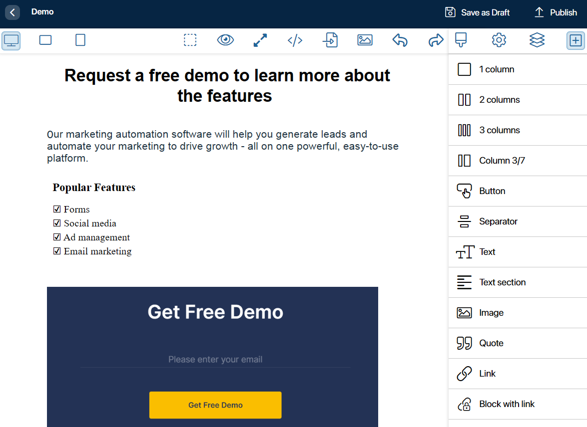
The email editor tools are placed on the top toolbar and the sidebar.
Top toolbar of the template editor
Here you can:
- Change the name of the template.
- Save it as a draft or publish it.
- Choose in the left corner a convenient template layout: desktop, tablet, or mobile.
The following actions are available on the right side of the top panel:
- 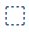 Display the boundaries of the components that make up the block in the template body. For example, in a 3 columns block, you will see the borders of its columns.
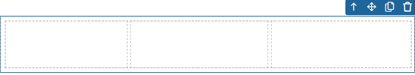
- Show how the template will look like in the email (preview).
- 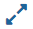 Switch to the full-screen mode.
- 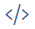Get the HTML code of the template. It will be displayed in the opened window. Copy the HTML code so that you can use it to export the template.
- 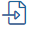 Import the template using the HTML code. In the opened window, paste the HTML code of the template and click Import. The content of the imported template will then be displayed on the email editor page.
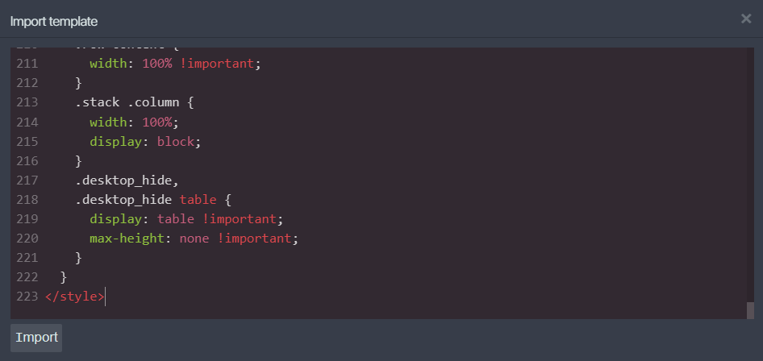
- 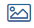 Locally disable the display of images in the template. Use this option for convenience when creating a complex template. The icon will be displayed instead of an image.
- 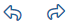 Undo or redo the last action you performed when working with the template.
- 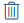 Clear the template by deleting its content.
Sidebar of the template editor
There are several tabs on the sidebar:
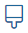 Style manager.
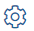 Component settings.
Layer manager.
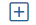 Blocks.
Let’s take a closer look at working with tools on each tab of the sidebar.
Blocks
Start creating a template by filling it with blocks. To do this, drag and drop the desired blocks into the template body. You can divide the content into columns, and add buttons, separators, texts, images, lists, etc.
When you hover over a block, the available actions will be displayed on the right side. You can move the block up or anywhere on the template, as well as copy or delete it.
Style manager
Select a block and click this tab to set styles for its components. By using the HTML editor, you can change the dimensions, increase margins, etc.
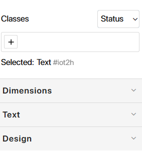
Component settings
Different components in blocks have their own set of settings on this tab. For example, for a link, you can set the title that will be displayed when you hover over the link, the URL, and the browser tab to which it will be redirected, current or new.
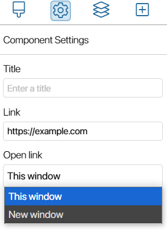
Layer manager
Here you will see the structure of the template content, considering the nesting of its components. You can name the components and use the tab to quickly navigate to the desired component.
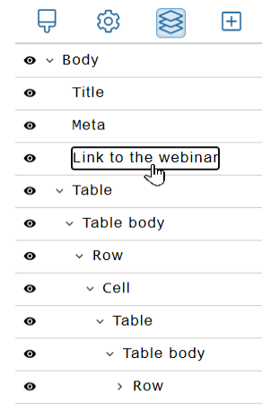